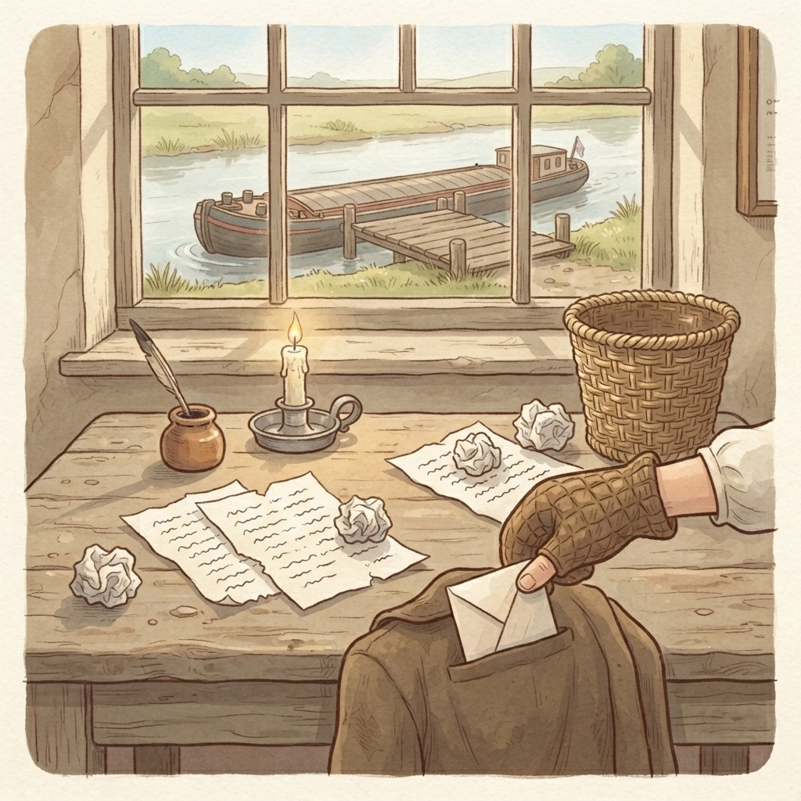

Green frame = the pick used in the game. To swap: python3 .claude/skills/openart-pictures/fetch.py pick story-c2_reply_none <version>, then import again.

Warm hand-drawn storybook cartoon illustration for a cosy children's farming game. Soft dark-brown ink outlines (not black), flat colours with gentle cel shading and a light paper texture, a cosy earthy palette of honey yellow, moss green, warm browns, brick red and soft sky blue. Friendly rounded characters with rosy cheeks, simple bright eyes and chunky cute proportions. Old-world countryside setting, no modern objects. Eye-level storybook view, full-bleed square illustration that fills the whole frame edge to edge, painted right into all four corners with square corners, no border, no frame, no paper margin, no vignette, no text, no letters, no logos. No collar bells or bells on any animal. Do not show the farmer; no main character in the foreground. Match the drawing style of reference image 1, using it only for the style: paint one single scene that fills the whole frame, not a sheet or a collage. Scene: A rough farmhouse table seen from just above, in warm window light: a pen in a small pot of ink, a candle in a plain tin holder, and several sheets of paper torn in halves and crumpled, with rows of plain wavy lines on them instead of writing, lying scattered beside a waste basket. From the camera side, one hand in a brown woven work mitt reaches in and holds a single small folded slip of paper, about to tuck it into a coat pocket on the table's edge. Through the window behind the table a river barge lies empty at a wooden landing, with nobody aboard and nobody on the bank. No other hands, no people. Every object is a plain ordinary object with no faces: no eyes or smiles on baskets, jars, sacks, tools, lanterns or buildings. No letters or numbers anywhere; any writing is shown only as rows of plain wavy lines. No people anywhere except those named in the scene, not even tiny ones in the distance or outside a window.